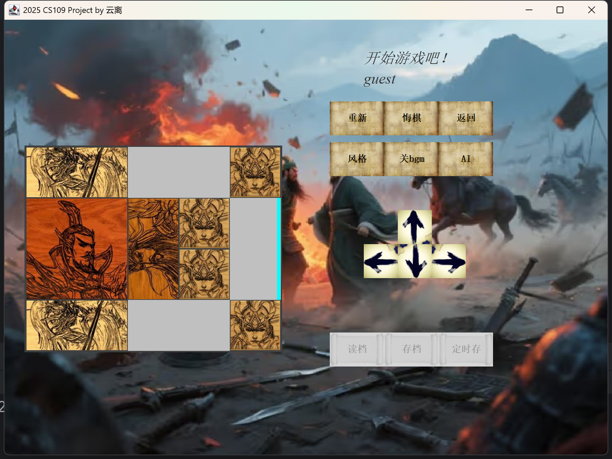
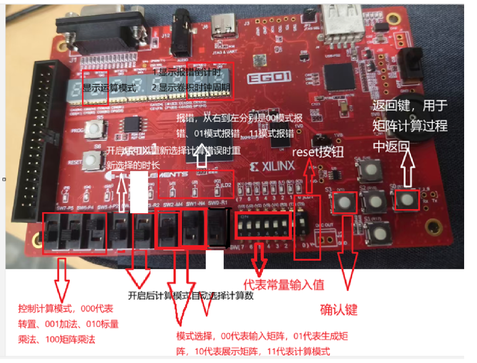
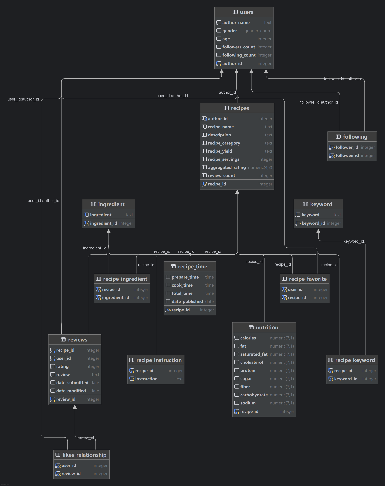
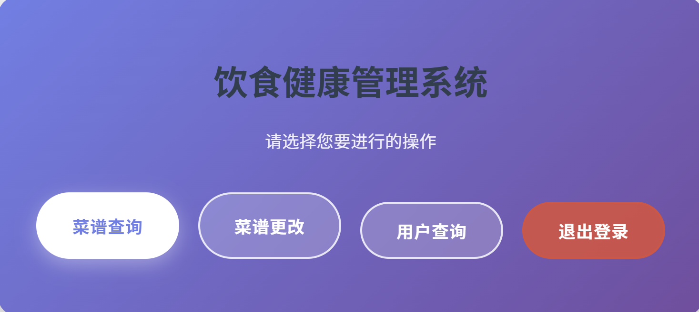
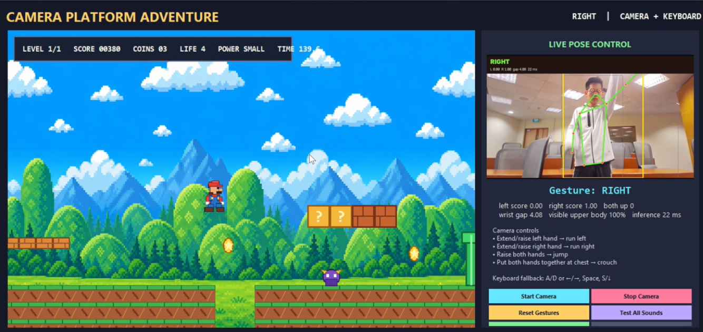
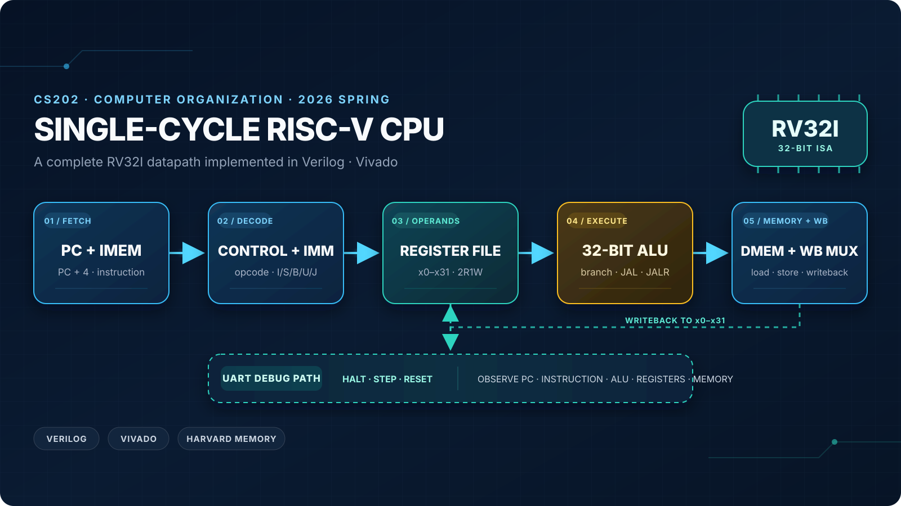

CS109 · Spring 2025 Project: Klotski
Fundamentals of Computer Programming course project: a Java version of the classic Klotski puzzle.
Final Score:⭐104/ 100
Mostly course projects, with a few experiments along the way.

Fundamentals of Computer Programming course project: a Java version of the classic Klotski puzzle.

Digital Logic course project: an FPGA-based matrix calculator.

Database Systems course project I: a recipe management system for SUSTech.

Database Systems course project II: a database-backed recipe system for SUSTech.

A visual computing project featuring facial-expression recognition, dance scoring, and motion-controlled games powered by real-time face and body keypoints.

Computer Organization course project: a single-cycle RV32I CPU built with Verilog and Vivado, with UART debugging and interactive teaching tools.